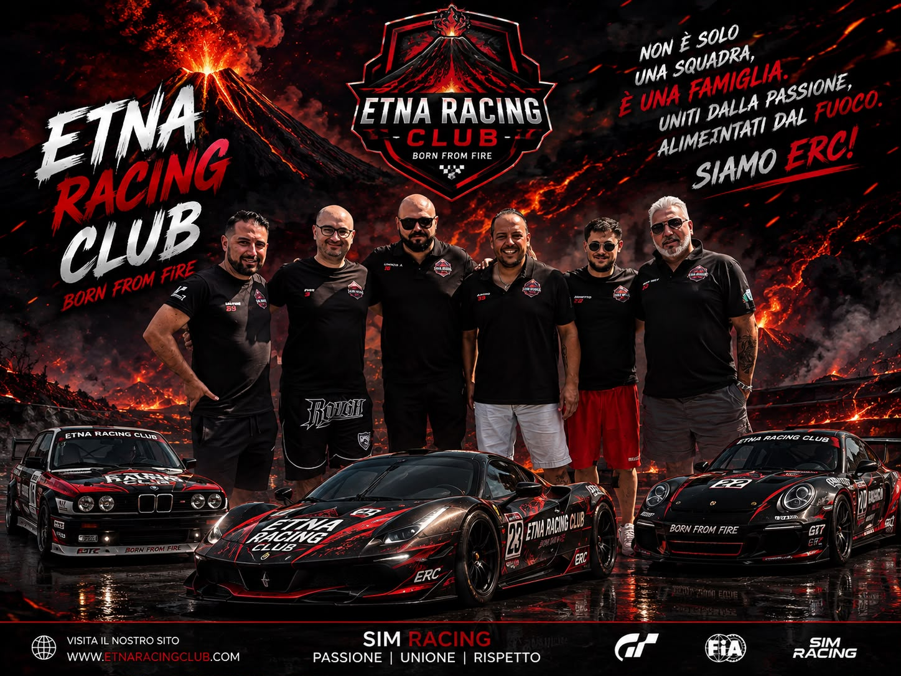
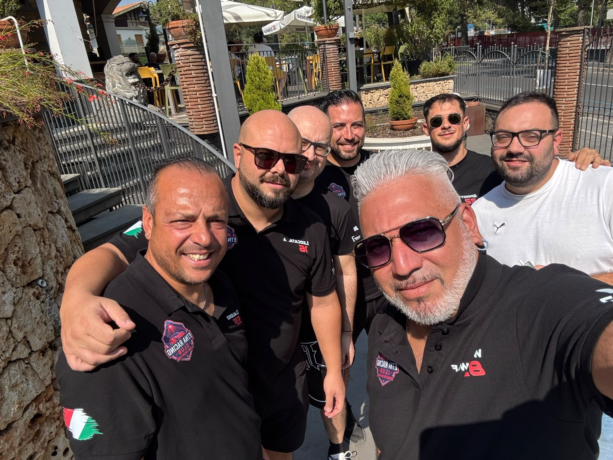
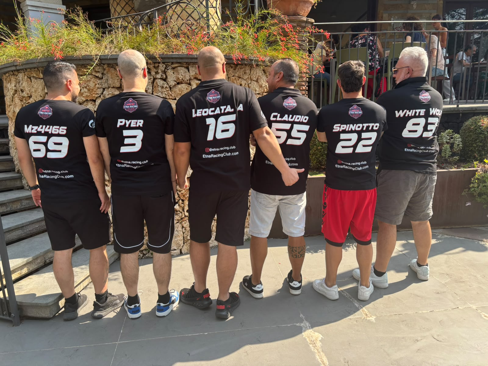
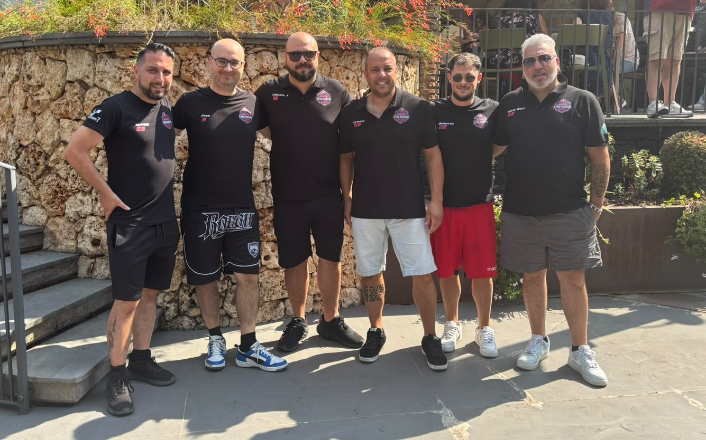

Oggi si è tenuto, per la prima volta, il Raduno dell'Etna Racing Club. Tra impegni di lavoro, famiglia e distanza, non tutti i membri sono riusciti a essere presenti, ma chi c'era ha reso l'evento speciale.
Il raduno è stato ospitato da Papaveri e Papere, il noto bar/ristorante/pizzeria di Nicolosi. In prima linea, come sempre, gli amministratori e fondatori del gruppo, Antonio e Pierpaolo. Presenti anche Giovanni, in vacanza da Londra, e Fabio, arrivato dal Nord Italia nonostante sia anch'egli nicolosita come Giovanni: la passione per l'Etna Racing Club, evidentemente, non conosce distanze. A completare il gruppo, Matteo Spinotto, Claudio e il nuovo arrivato Gaetano, accolto con l'entusiasmo che contraddistingue questa community.
Tra una granita, il caldo estivo e tante risate, è stata una bella colazione condivisa tra amici e appassionati, la dimostrazione di come, dietro le gare e la classifica, ci sia prima di tutto un gruppo di persone che si vuole bene.
Si spera di poter organizzare presto un altro raduno, magari con una partecipazione ancora più numerosa. Un gruppo speciale, anche se qualcuno, come detto, non è potuto essere presente questa volta — ma lo spirito dell'Etna Racing Club era lì con noi comunque.
Alla prossima!


